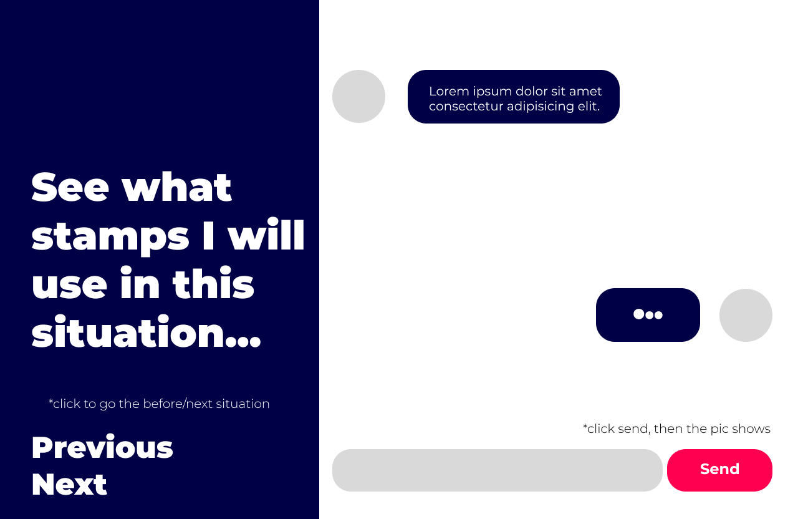
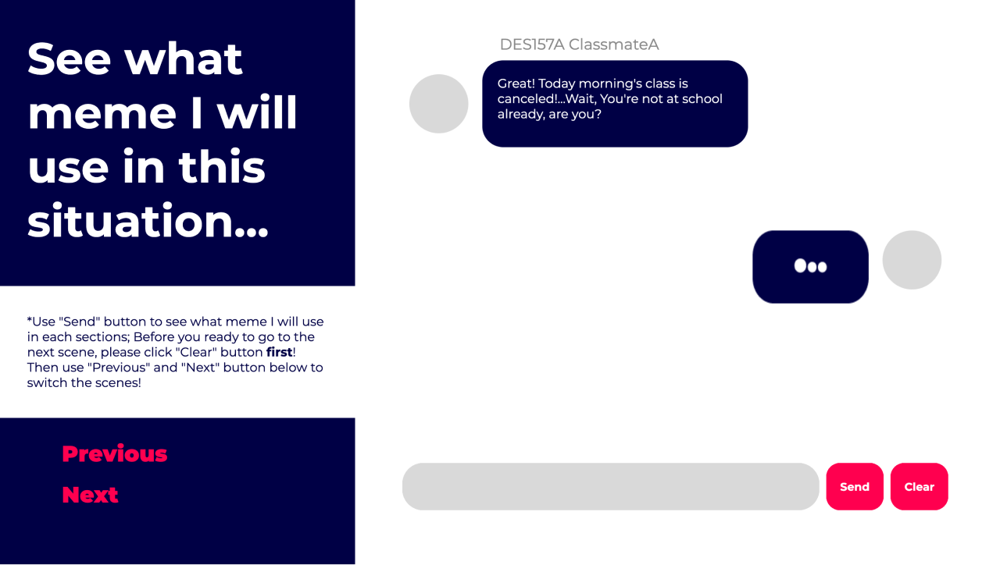
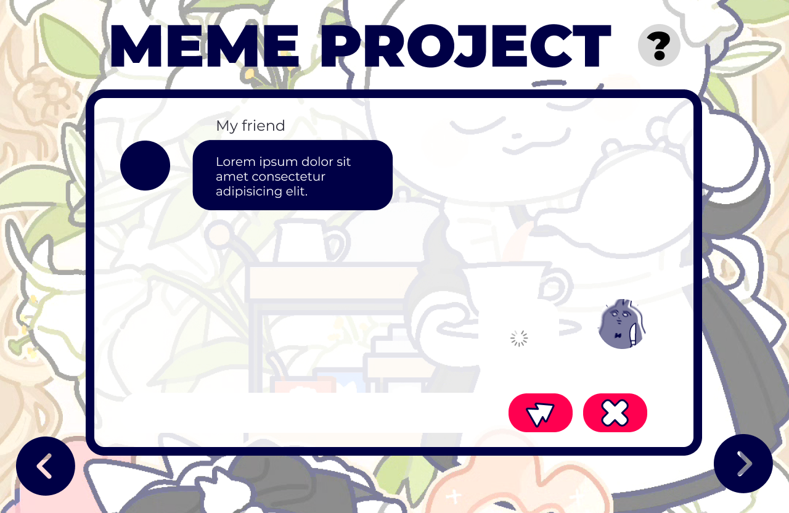

I'm trying to make a feature that utilizes overlay to show a meme being sent within a chat box. The way this works is that the viewer can click the send button to send an image, and then click the previous and next buttons on the left side of the screen to switch scenarios to see what meme I would use in a particular scene.
First Virsion
In this first version, I found that users would focus all their attention on the right half of the area. They would try what the input bar would do (but really it was just part of the design). I found that in this version of the design, users hardly notice the buttons on the left to change scenarios. I've gotten feedback like, "When I'm done sending an image I expect the action to be done in the attachment area, and hardly notice the previous and next buttons to the left, which is also related to the design of the text they have now." I find it difficult for users of this page alone to successfully complete the tasks I want them to do, so I think I should need to add something like a hint or something.
I also found that if the user continues to tap the next scene after tapping send and the image appears, the image from the previous scene still appears. So I added the clear image button to avoid this.
Second Virsion

For this version, I've added an explanation of the project on the left side of the page, i.e., a detailed hint that tells the user what to do. Also, I changed the previous and next buttons to a bright red color to make it easier for users to notice them.
Regarding the details section, I added names for the people on the left so user can understand the whole story more easily and clearly.
Third Virsion
In the third version, I changed the UI considerably. I made the chat interface more screen-like, and replaced the previous and next buttons with arrow icons, placing them on either side of the screen to make it easier for the user to access them. In the third version, I changed the UI considerably. I made the chat interface more screen-like, and replaced the previous and next buttons with arrow icons, placing them on either side of the screen. Also, I modified the send and clear buttons into icon images. Next to the big title I create an overlay for the description of this project, which makes the whole interface cleaner and neater.